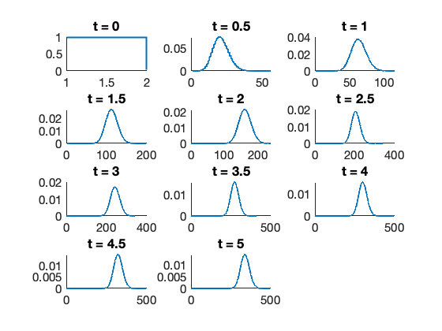
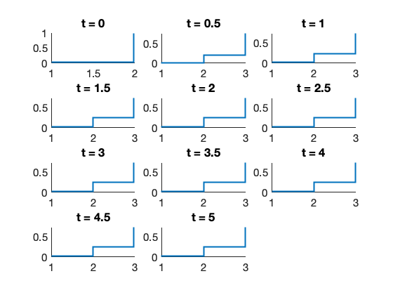
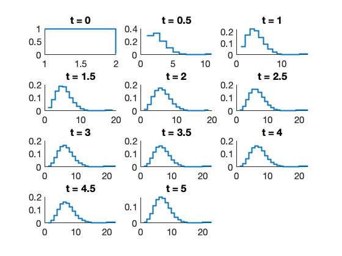
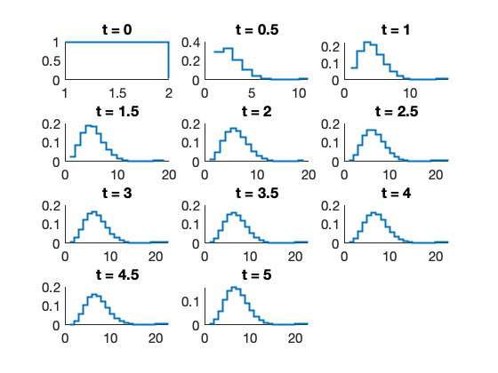
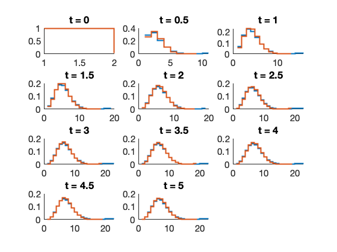

Contents
example_HybridModel
In this script, we demonstrate how to adjust a model to treat some species (i.e., upstream reactions) using an ODE formulation, while having other species (i.e., downstream species) evolving in a discrete stochastic manner.
close all clear all addpath(genpath('../src'));
Example 1 - transcription and translation
First create a full model (e.g., for mRNA and protein)
Model1 = SSIT;
Model1.species = {'rna','protein'};
Model1.initialCondition = [0;0];
Model1.propensityFunctions = {'kr';'gr*rna';'k2*rna';'g2*protein'};
Model1.stoichiometry = [1,-1,0,0;0,0,1,-1];
Model1.parameters = ({'kr',100;'gr',0.5;...
'k2',2;'g2',1});
Model1.fspOptions.initApproxSS = false;
Model1.tSpan = linspace(0,5,11);
[fspSoln1,Model1.fspOptions.bounds] = Model1.solve;
Model1.makePlot(fspSoln1,'marginals',[],[],[2,3])
 Next, reduce it by assuming that the rna behaves deterministically
Model2 = Model1;
Model2.useHybrid = true;
Model2.hybridOptions.upstreamODEs = {'rna'};
[fspSoln2, Model2.fspOptions.bounds] = Model2.solve;
Model2.makePlot(fspSoln2,'marginals',[],[],3)
legend('Full','QSSA for (n)','Location','eastoutside')
Example 2 - 5-species MAPK induction Model
In this example, we consider a model of MAPK translocation to the nucleus followed by binding to a gene and then transcription activation. We will assume that there are two alleles with one each starting in the active and inactive state.
Model3 = SSIT;
Model3.species = {'geneInactive','geneActive','mapkCyt','mapkNuc','rna'};
Model3.initialCondition = [1;1;50;0;0];
Model3.propensityFunctions = {'kin*mapkCyt';'kout*mapkNuc';...
'kbind*mapkNuc*geneInactive';'kunbind*geneActive';...
'ktranscribe*geneActive';'gdegrade*rna'};
Model3.stoichiometry = [0,0,-1,1,0,0;...
0,0,1,-1,0,0;...
-1,1,0,0,0,0;...
1,-1,-1,1,0,0;...
0,0,0,0,1,-1];
Model3.parameters = ({'kin',1;'kout',2;...
'kbind',2;'kunbind',200;...
'ktranscribe',20;'gdegrade',1});
Model3.fspOptions.initApproxSS = false;
Model3.tSpan = linspace(0,5,11);
[fspSoln3,Model3.fspOptions.bounds] = Model3.solve;
Model3.makePlot(fspSoln3,'marginals',[],[],[11:15])
  
 Reduced model where only the RNA species is stochastic
Model4 = Model3;
Model4.useHybrid = true;
Model4.hybridOptions.upstreamODEs = {'geneInactive','geneActive','mapkCyt','mapkNuc'};
[fspSoln4, Model4.fspOptions.bounds] = Model4.solve;
Model4.makePlot(fspSoln4,'marginals',[],[],15)
 Reduced model where only the gene and RNA species are stochastic.
In this example, you should recieve a warning telling you that two reactions (3 and 4) change both the upstream and downstream species. This is not allowed, and the code will then automatically delete the upstream effect (in this case the change of active MAPK) from the stoichiometry for the downstream reaction. This will introduce an additional approximation error.
Model5 = Model3;
Model5.useHybrid = true;
Model5.hybridOptions.upstreamODEs = {'mapkCyt','mapkNuc'};
[fspSoln5, Model5.fspOptions.bounds] = Model5.solve;
Model5.makePlot(fspSoln5,'marginals',[],[],[11,12,15])
legend('Full','QSSA for (gene,MAKP)','QSSA for (MAKP)','Location','eastoutside')
Warning: Reaction 4 changes both ODE and stochastic species. Removing effect on upstream species.
> In <a href="matlab:matlab.internal.language.introspective.errorDocCallback('parallel_function>make_general_channel/channel_general', '/Applications/MATLAB_R2023a.app/toolbox/matlab/lang/parallel_function.m', 837)" style="font-weight:bold">parallel_function>make_general_channel/channel_general</a> (<a href="matlab: opentoline('/Applications/MATLAB_R2023a.app/toolbox/matlab/lang/parallel_function.m',837,0)">line 837</a>)
In <a href="matlab:matlab.internal.language.introspective.errorDocCallback('parallel.internal.parfor.cppRemoteParallelFunction', '/Applications/MATLAB_R2023a.app/toolbox/parallel/cluster/+parallel/+internal/+parfor/cppRemoteParallelFunction.m', 53)" style="font-weight:bold">parallel.internal.parfor.cppRemoteParallelFunction</a> (<a href="matlab: opentoline('/Applications/MATLAB_R2023a.app/toolbox/parallel/cluster/+parallel/+internal/+parfor/cppRemoteParallelFunction.m',53,0)">line 53</a>)
Warning: Reaction 3 changes both ODE and stochastic species. Removing effect on upstream species.
> In <a href="matlab:matlab.internal.language.introspective.errorDocCallback('parallel_function>make_general_channel/channel_general', '/Applications/MATLAB_R2023a.app/toolbox/matlab/lang/parallel_function.m', 837)" style="font-weight:bold">parallel_function>make_general_channel/channel_general</a> (<a href="matlab: opentoline('/Applications/MATLAB_R2023a.app/toolbox/matlab/lang/parallel_function.m',837,0)">line 837</a>)
In <a href="matlab:matlab.internal.language.introspective.errorDocCallback('parallel.internal.parfor.cppRemoteParallelFunction', '/Applications/MATLAB_R2023a.app/toolbox/parallel/cluster/+parallel/+internal/+parfor/cppRemoteParallelFunction.m', 53)" style="font-weight:bold">parallel.internal.parfor.cppRemoteParallelFunction</a> (<a href="matlab: opentoline('/Applications/MATLAB_R2023a.app/toolbox/parallel/cluster/+parallel/+internal/+parfor/cppRemoteParallelFunction.m',53,0)">line 53</a>)